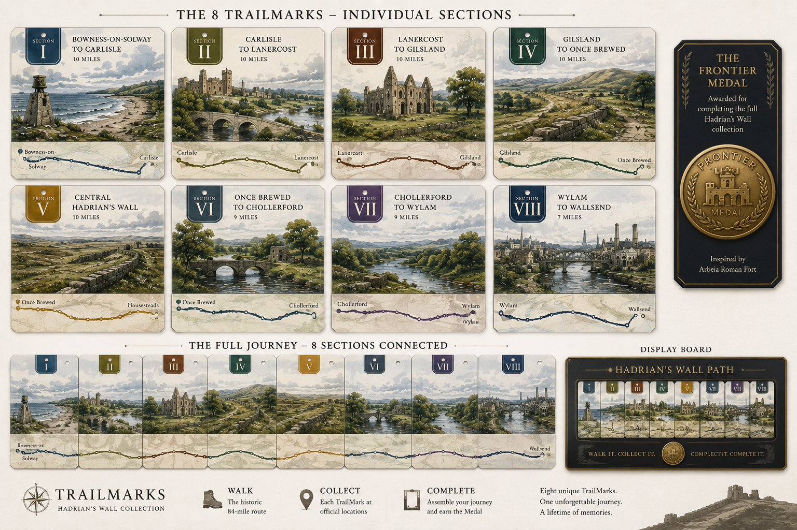

A new collectible experience inspired by Hadrian's Wall. Collect a unique TrailMark for each section of the journey and build the complete route from coast to coast.

More than a souvenir. A journey you can collect.
Complete each stage of the Hadrian's Wall Path.
Earn a TrailMark inspired by that section of the route.
Connect all eight pieces and unlock the exclusive Frontier Medal.
The response from the Hadrian's Wall community has been incredible. We're currently developing the collection and inviting early supporters to follow the journey.
We'll only contact you about TrailMarks updates. Unsubscribe at any time.
Not yet. We're currently developing the first collection and gathering feedback from walkers and local businesses.
That's the plan. Each TrailMark represents a section of the route and forms part of the complete collection.
An exclusive ninth piece earned by completing the full collection.